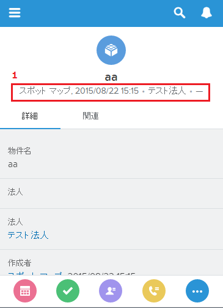
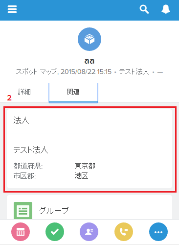

■Salesforce標準機能
●連動項目
連動項目
| タイプ |
制御項目 |
連動項目 |
備考 |
| チェックボックス |
○ |
× |
|
| 複数選択リスト |
× |
○ |
|
| カスタム選択リスト |
○ |
○ |
|
| 標準選択リスト |
○ |
× |
|
●暗号化項目
暗号化項目を参照できるのは「暗号化されたデータの参照」権限を
付与されたユーザのみ。制限事項は下記。
-
暗号化項目の値をコピーできるのは「暗号化されたデータの参照」権限を
付与されたユーザのみ(編集は「暗号化されたデータの参照」権限が付与されて
いなくても行える)
-
Visualforceページでの暗号化項目の表示をサポートしているのは
apex:outputFieldのみ
-
リストビュー、レポート、積上集計項目、ルール条件などの条件には
使用できない(レポート結果には含められる)
-
検索することはできない(検索結果には含められる)
-
Web-To-ケース、Web-To-リードのフォームには含められない
-
アウトバウンドメッセージには含められない
-
メールテンプレートに使用することはできるが、値は常にマスクされる
-
固有の値にすることはできない
-
外部IDにすることはできない
-
デフォルト値を設定することはできない
-
数式項目では使用できない
-
最大文字数は175
-
暗号化項目⇒他のデータ型、他のデータ型⇒暗号化項目に変更することはできない
-
Apex、入力規則で使用可能
-
デバッグログで暗号化項目がマスクされるのは下記からApex要求が発信されたときのみ
- Apex Webサービス
- Apex Trigger
- ワークフロー
- ページレイアウトに組み込まれたVisualforce
- Visualforceメールテンプレート
●外部ID項目
オブジェクトあたり最大7項目まで設定できる。
外部IDを設定できる項目のデータ型はテキスト、数値、メールのみ。
■モバイル関連
●モバイルブラウザアプリケーション
モバイルブラウザでのSalesforceフルサイトの使用はサポートされていない。
●通知について
- アプリケーション内通知
アプリケーション内通知はユーザがSalesforce1を使用しているときに
関連活動をユーザに通知する。ベルアイコンをタップすると、過去90日以内に
受信した最新の20件の通知を参照できる。
なお、アプリケーション内通知の有効化は、全員に対して有効化するか、無効化するかの2択。
- 転送通知
転送通知は、Salesforce1ダウンロード可能アプリケーションが使用されていないときに、
モバイルデバイスに表示されるアラート。
システム管理者が組織に対して転送通知を有効にすると、各ユーザは自分のデバイスに
転送通知を受信するかどうかを選択できる。
システム管理者が組織に対して、「転送通知の完全なコンテンツ」を有効にした場合、
アプリケーション内通知と同じ完全なコンテンツが転送通知に含まれる。
●ナビゲーションメニューについて
スマート検索項目はメニューの[最近]セクションにSalesforceオブジェクトを表示する。
この項目をナビゲーションメニューに追加しない場合、ユーザはSlaesforceオブジェクトにアクセスできない。
ユーザに最近使ったオブジェクトの履歴がない場合、
[最近]セクションには一連のデフォルトオブジェクトが表示される。
なお、オブジェクト使用後、[最近]セクションに表示されるまでに最大15時間かかる可能性がある。
- ユーザの種別ごとに異なるナビゲーションメニューを設定できない
-
Visualforceページ、Lightningページ、またはLightningコンポーネントを
Salesforce1ナビゲーションメニューに含めるには、タブを作成する必要がある。
-
一部のオブジェクトは最近アクセスしていてもSalesforce1ナビゲーションメニューの
[最近]セクションには表示されない。
-
ダッシュボード、人、グループのメニュー項目をナビゲーションメニューに追加していない場合、
これらの項目はスマート検索項目内に自動的にに組み込まれ、[最近]セクションに
表示される。
ダッシュボード、人、グループをナビゲーションメニューに追加した場合、
[最近]セクション外に表示される。
●コンパクトレイアウトについて
コンパクトレイアウトに割り当てた最初の4項目が以下の場所に表示される。
- レコードの特徴領域
- レコードの関連ページのモバイル(拡張ルックアップ)カード


コンパクトレイアウトには以下の項目を表示できない。
- テキストエリア
- ロングテキストエリア
- リッチテキストエリア
- 複数選択リスト
ページレイアウトとコンパクトレイアウトは連動していない。
そのため、ページレイアウトから項目を削除しても、コンパクトレイアウトからは
削除されない。